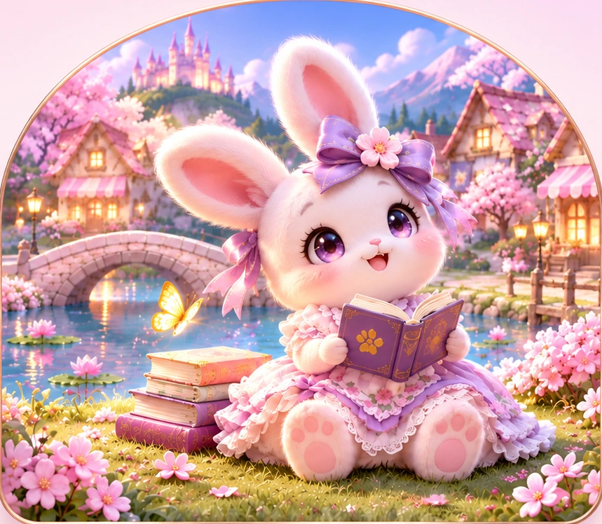

Sakura Village
Flower-lined paths and new districts in development.
Meet Mochi. Dream up delightful outfits, decorate a cozy home and explore a village full of little wonders.
Explore Pawmora ✿ Share your ideas ♡Independent game • Made with Unity • In development

Flower-lined paths and new districts in development.
Dreaming of embroidered dresses, bows and themed collections.
A cozy space to make your own.
Fishing and cooking prototypes in development.
Original collections planned for development.
Blossoms, puff sleeves and layered skirts.
Pearls and elegant royal details.
Lavender hues and starry embroidery.
Bows and strawberry motifs.
Vote for the next little wonder. No GitHub account needed.
Please avoid personal information. Suggestions are reviewed privately. A random voting identifier is stored in your browser.
Character creation, home, town and shop prototypes.
Expanded village, fishing, fashion and responsive UI.
Device testing, community demo and mobile release preparation.